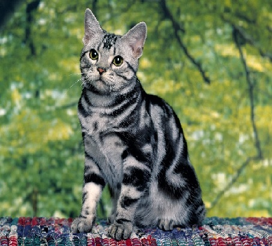

Меня зовут Черников Григорий Викторович и я начинающий веб-разработчик. Меня зовут Черников Григорий Викторович и я начинающий веб-разработчик.Меня зовут Черников Григорий Викторович и я начинающий веб-разработчик. Меня зовут Черников Григорий Викторович и я начинающий веб-разработчик.Меня зовут Черников Григорий Викторович и я начинающий веб-разработчик. Меня зовут Черников Григорий Викторович и я начинающий веб-разработчик.Меня зовут Черников Григорий Викторович и я начинающий веб-разработчик. Меня зовут Черников Григорий Викторович и я начинающий веб-разработчик.Меня зовут Черников Григорий Викторович и я начинающий веб-разработчик.
Добро пожаловать на мой сайт

Фронтенд
Фронтенд (или коиентская часть) - это то, что видит пользователь. Он включает в себя все визуальные элементы веб-сайта или приложения: кнопки, формы, изображения и текст.
Бэкенд
Бэкенд (или серверная часть) - это "за кулисами" веб-приложения.